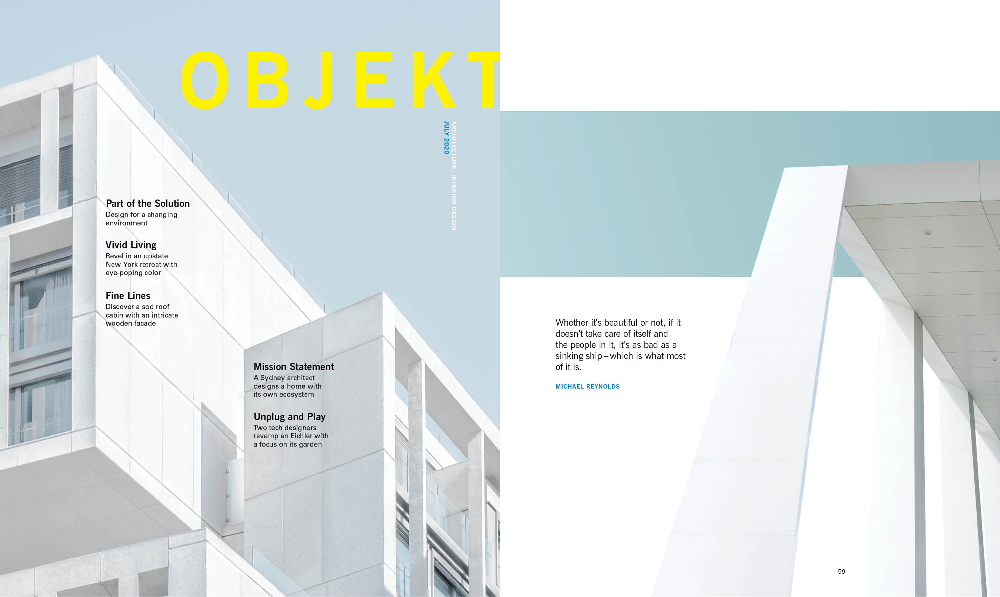
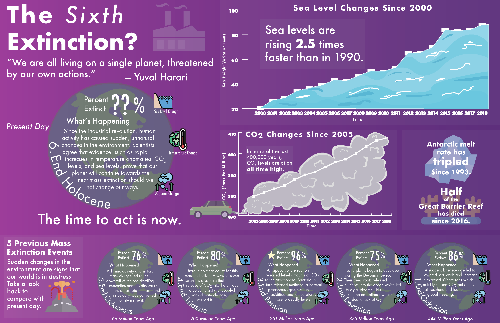

My journey with graphic design started through coursework and clubs. There, I learned the foundations of design technologies (Creative Cloud, Figma, etc.), as well as all important principles of typography and design. Let's explore some of my past work!
OBJEKT is an architecture and interior design magazine that I worked on during Typography II. During the project, I focused on creating a visual language, which included tracked out headers, rectangular photos, sillouettes, and a consistent type heirarchy. The images featured were chosen due to their spatial nature, which gave the spreads a sense of perspective and depth. I also considered the pacing of my visual language to communicate purpose and aid in story telling.
This information design project, based on The Sixth Extinction by Elizabeth Kolbert, showcases the Earth's sixth extinction event in terms of the previous five. In the original sketch, the layout placed too much emphasis on past extinction events and not enough on present day, as evidenced by the small size of the graphs in comparison to the other elements. In the final version, I encouraged the viewer to draw comparisons between current environmental issues and the conditions during the previous extinction events, through iconography representing sea level, global temperature, and carbon dioxide changes. A major success was the use of opacity to divide the poster into a grid, and to improve the readability of text against the Earths. The final version also offered the opportunity to incorporate original illustration in the graphs to bring the data to life.
In finding the right symbol to represent Our Space, a roommate communication application, I explored logos featuring a house, couch, and finally mugs. I felt mugs were the optimal choice because it reminded me of sharing, not only coffee, but property, as roommates must do to coexist. I played around initially with an aerial view of mugs, then moved to a side view of a stack of mugs. The final version employs the concept of positive and negative space and suggests a square-like perimeter reminiscent of the aerial view of a square-shaped room.
With a primary focus on typography, I designed two books for print in InDesign. My first book 24 Logotypes and Typefaces explores optimal type size to leading ratios, unique letterform combinations, and typographic history. One of my notable challenges with this project was editing the cover images for each new font section to have the same lighting and color pallet with Photoshop. The second book is a modern redesign of the Tennessee William's A Streetcar Named Desire. My focus was to represent the thoughts and motivations of each character with typography through matching certain styles of font type, size, or color with specific lines in the play. In both books, I employed a global grid system and character/paragraph styles in order to maintain a consistency in layout.